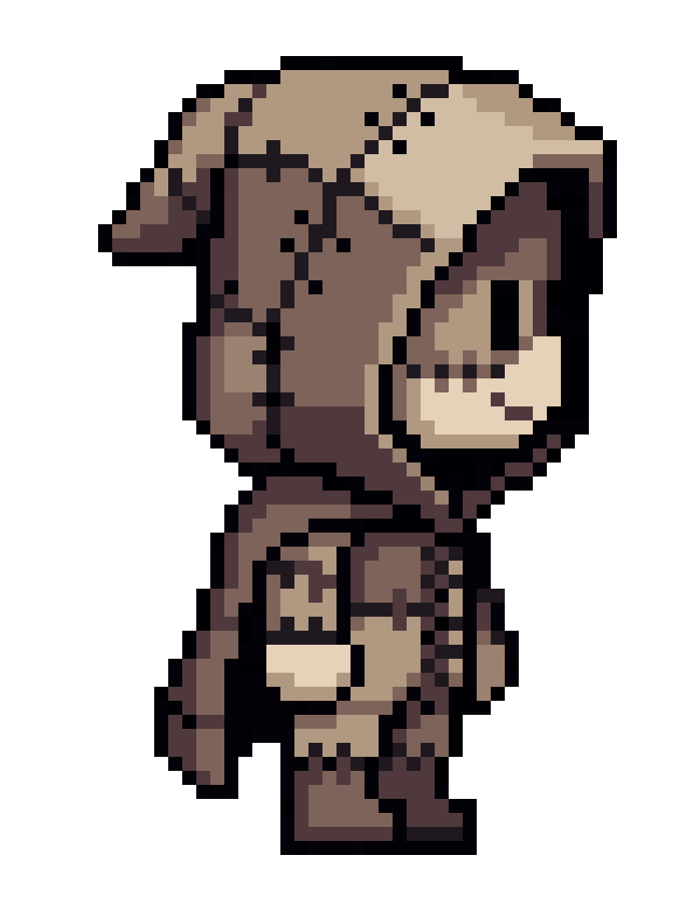
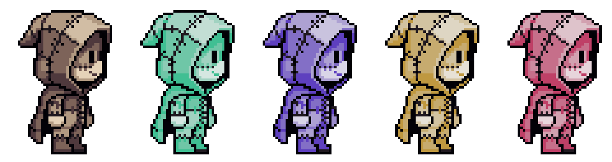
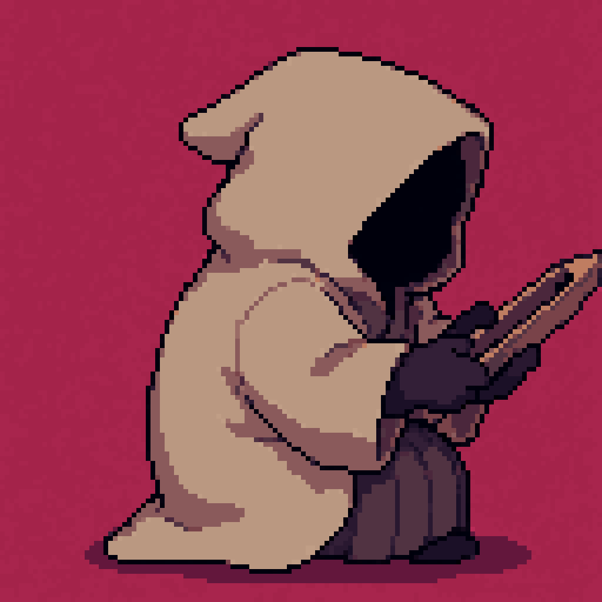
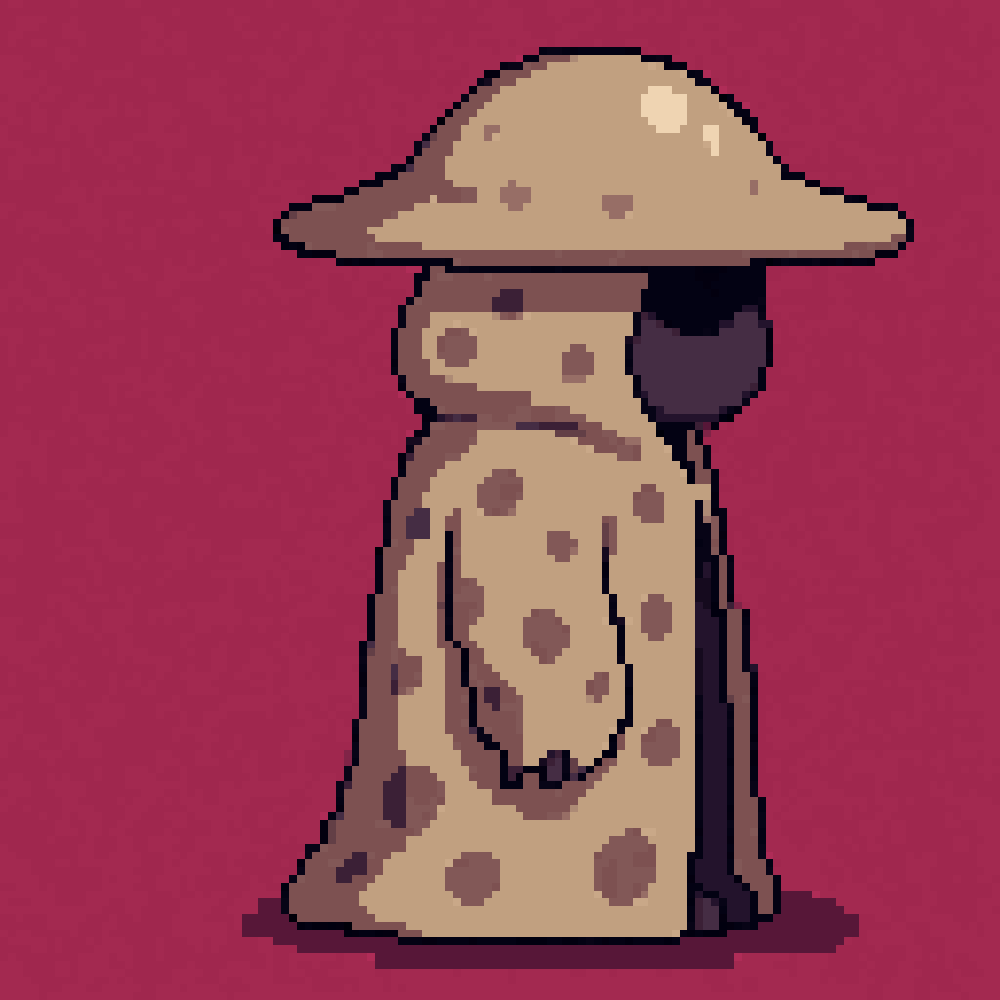
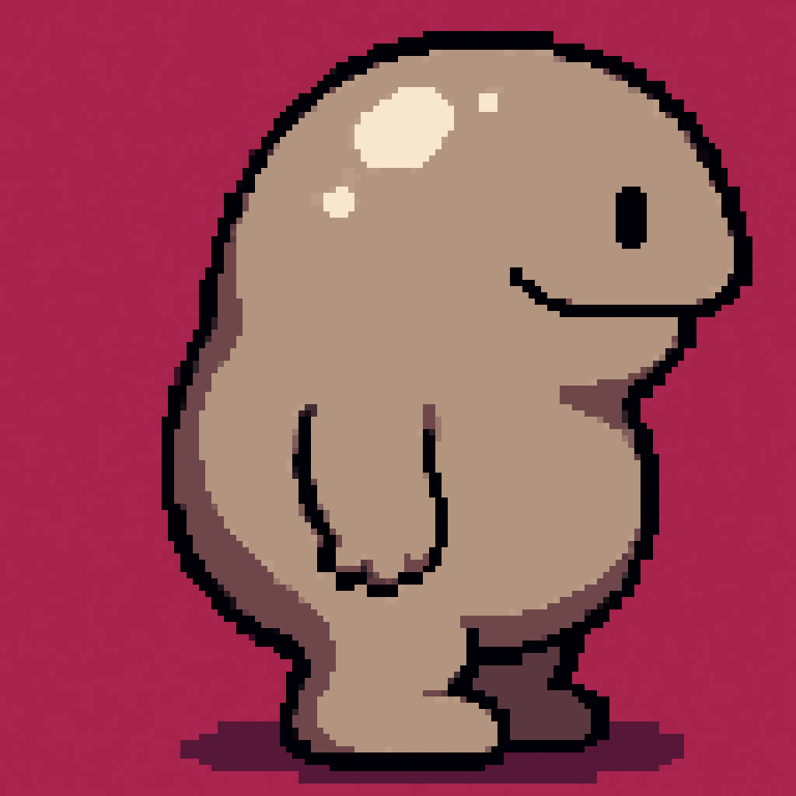

A world you can hold in your hands
Fiber is a co-op platformer for up to four friends. You live in warm, handmade guild towns, and you head out room by room with your friends, gathering threads, rescuing folk and bringing it all home to craft with.
The tone I keep coming back to is Studio Ghibli: Irontown and the Valley of the Wind, warm, busy communities where everyone has a craft. It's built in Godot 4, with an online backend on Nakama.
Squad up
Four-player online co-op, built in from day one.
Craft, don’t grind
Power comes from threads you weave into gear and skills, not XP bars.
Draft the descent
The party builds each dungeon together, card by card, before going in.
Everything is woven
People, monsters, places, weather, even light. Damage is fraying and healing is re-weaving. The farther you travel, the older and more tangled the weave gets.
The Weave
The surface. Guild towns, craft halls and the folk who keep the world stitched together.
The Between
The wilds between the towns: mossy, overgrown and full of materials, monsters and folk who need a hand.
The Ancient Knot
The oldest, most tangled weave in the world, far below the towns.
The Fiberkin

The hero is a small guild member stitched together from found scraps: a patchwork hood with visible seams, a stitched smile, and a cloak that trails behind every jump.
The sprite has to read at 64 pixels, stay charming at 128, and be simple enough for four players to tell apart by cloth color alone. All five colors come from a palette swap of the same rig, so every animation works in every color.

Four friends, one room at a time
1 · Gather
Shop, craft and pick a gate with your guild in town.
2 · Descend
Each room rolls an encounter: monsters, treasure or someone in trouble.
3 · Harvest
Loot materials and threads. Rescue folk for your town.
4 · Weave
Turn the haul into gear, skills and keys. Go deeper.
The inspirations: MapleStory’s party play, Monster Hunter’s gather-and-craft rhythm and Path of Exile’s itemization, with a metroidvania world to open up as your build grows. Grinding is for materials, not experience.
Threads: pull it out, weave it in somewhere else
Every modifier in Fiber is a thread: a twist of fiber you can unstitch from one thing and sew into another. Nothing you find is ever wasted.
Soul thread
Who you are. Woven into yourself for stats and innate bonuses. Wool takes a blow; silk is precise.
Item thread
What you carry. Gear affixes like “+8% Fire Resistance” or “Spells ignite on crit”.
Emblem thread
What you can do. Skill behavior: extra projectiles, a new element, an on-kill burst.
Threads come in five grades from Common to Legendary. Crafting can reroll, upgrade or corrupt them, and corruption is a deliberate gamble: risk for power the guilds sealed away.
Skills are sewn, not learned
Beat a boss and you earn its pattern. Weave the pattern into an emblem, then embroider it with threads to bend how the skill behaves. You can unstitch a thread back out intact, or corrupt the emblem for something stronger and stranger.
Emblems double as keys. World gates ask for a skill with the right element or movement, so your build decides where you can explore. It’s the metroidvania layer, except the keys are skills you crafted.
The party builds the dungeon before it runs it
A crafted key opens an instanced dungeon. Its type sets the biome, its grade sets the stakes, and its affixes bend the whole run. Then everyone drafts: in turn, each player picks a room card from a hand of three or four and may lay a modifier on it. The last room is always the boss.
Same key, different party, different dungeon. Preparation is the key crafting, strategy is the draft, and execution is the run. More in Drafting dungeons.
Soft materials, sharp combat
- Hit stop freezes frames on impact, scaled to how hard you hit.
- Knockback is a decaying force that sends cloth bodies tumbling.
- Attack riders fire on cast, hit, crit or kill, stacked from gear and skills.
- Four elements: Fire, Ice, Lightning and Void.
- Crowd control: Root pins you in place, Silence locks your emblems, and teammates break you free.
- Living fringe: grass, moss and ivy sway in the wind and bend aside as you brush past.
Every control is sewn down
The interface is made of the same stuff as the world: fabric patches, paper and thread. Every panel has one dashed seam inset from its edge. Titles are hand-lettered and tilted like pinned labels. Health bars tear open when you take damage. And menus never pause the game, because your friends are still playing. I wrote up how the UI got there.
Folk you’ll meet on the way



These are generated early drafts from my pixel-art pipeline, which turns concept sketches into on-model sprites in the Fiberkin’s outline weight and palette. The Loomwright and Emissary sketches are by Dana Cassidy. Folk you rescue on runs move into your guild town and unlock buffs, recipes and skills.
Where it’s at
The client is Godot 4.7 with GDScript throughout. Scripted playtests capture frames, metrics and video, the same agentic workflow I use on Rubbley. Next up: bosses, guild towns and an alpha demo.